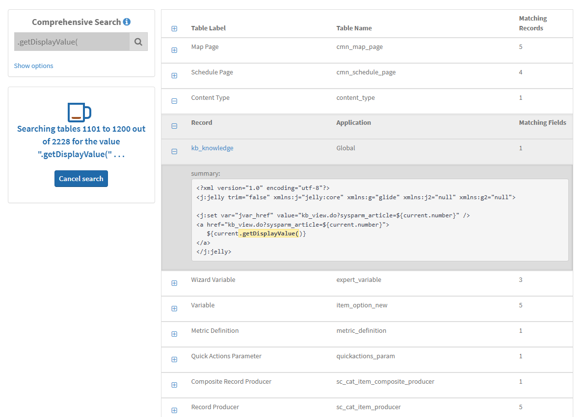

Comprehensive Search Tool
The only search tool that fully searches ALL records tracked by update sets to make sure that no matching records are missed.
The comprehensive search tool can be downloaded from ServiceNow Share here: https://developer.servicenow.com/connect.do#!/share/contents/2146901_comprehensive_search

Common Use Cases
Some common uses include:
- Find all references to a rebranded name or an outdated URL
- See if a script include is used anywhere before deleting it
- Identify all scripts using a deprecated function
- Check if I left any "gs.error('James test')" debugging messages anywhere
- Find the matching record for a mysterious sys_id
- Search for common spelling mistakes
Technical Details & Limitations
- Only searches fields with a base type of String or GUID (e.g. won't search Integer or Date/Time fields) and will only match internal values not display values. GUID fields (e.g. sys_id or reference fields) will only be searched if the search string is 32 characters long.
- Only searches tables that extend Application File, have "update_synch=true", or have special handling to be tracked in update sets (e.g. won't search the incident or task table unless specifically included in the options section).
- Will not search any tables that have Caller Access set to "Caller Restriction" or Can Read set to "false" unless those tables are in the global scope. If needed, after granting this widget access to those tables, can include those tables manually in the options section.
- Additional tables to include or exclude can be specified in the options section. Changes to these lists will be automatically saved just for you. To update the defaults for all users, edit the userProvided and userExcluded properties of the object in text file attached to this widget record. Personally, I like exclude by prefix all "sys_ux_" tables as those can be slow to search in some instances.
- To ONLY search specific tables, in the options section mention those specific tables and put "All" in the tables to be excluded field.
- The list of tables updates weekly unless you manually refresh it in the options section.
Comments
Join the discussion and share your thoughts!